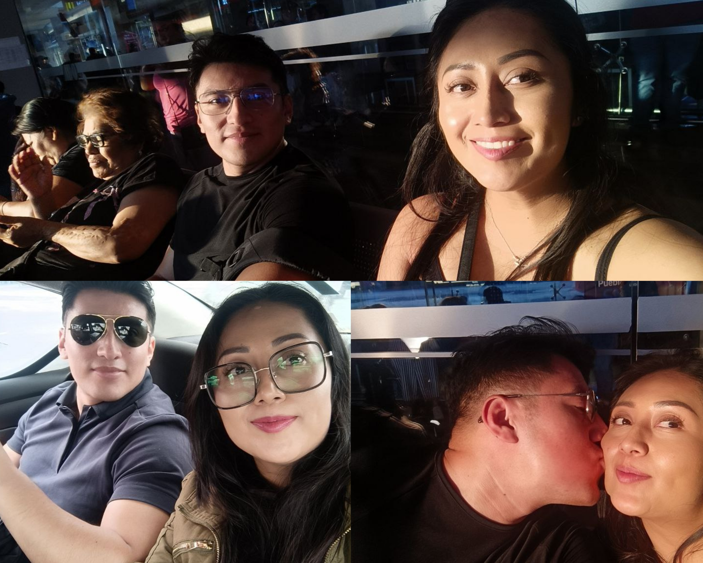
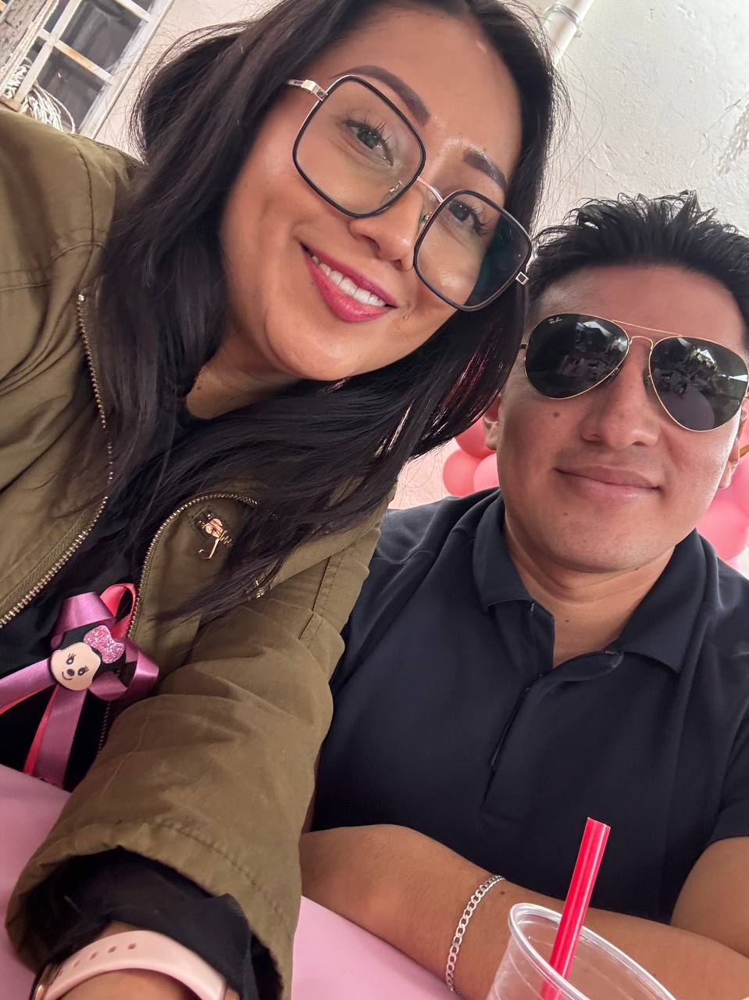
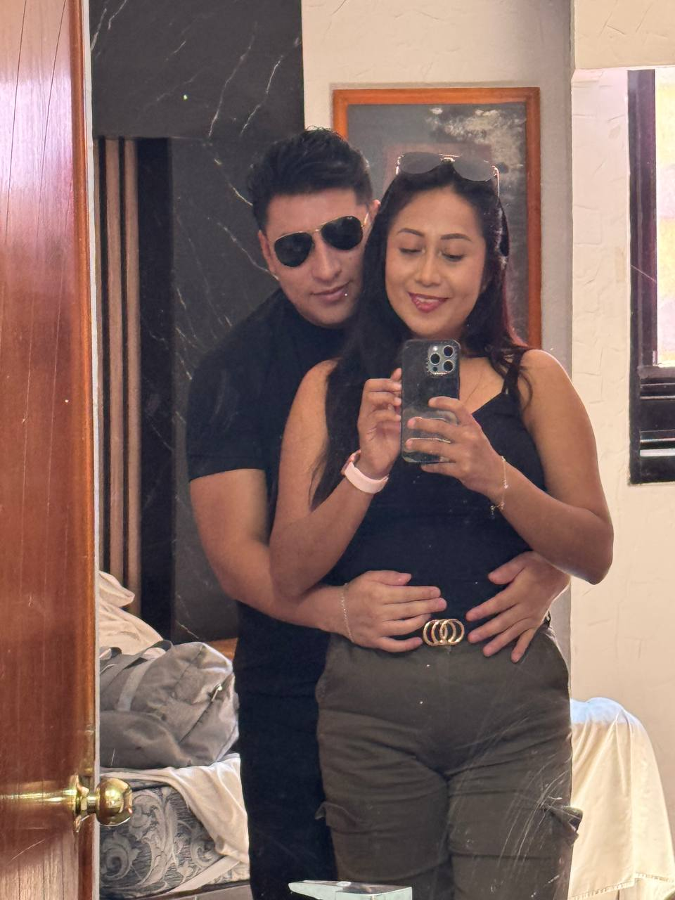
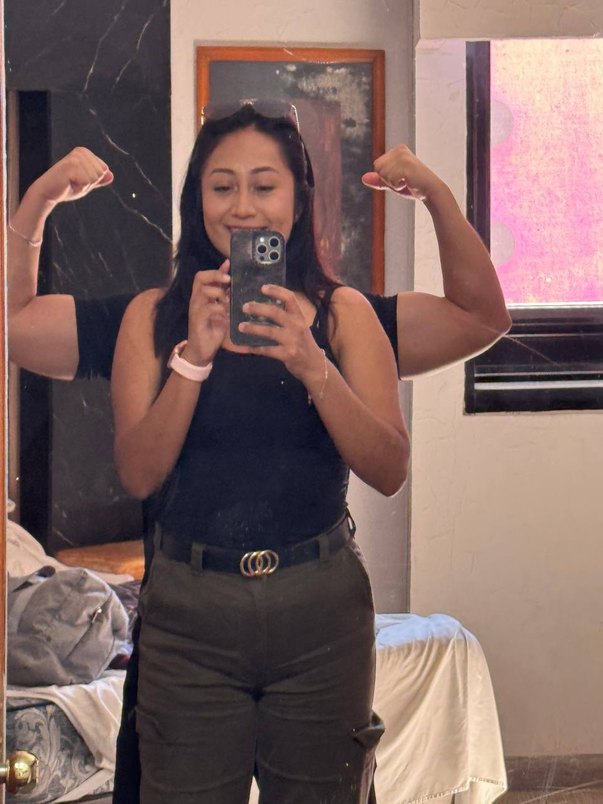
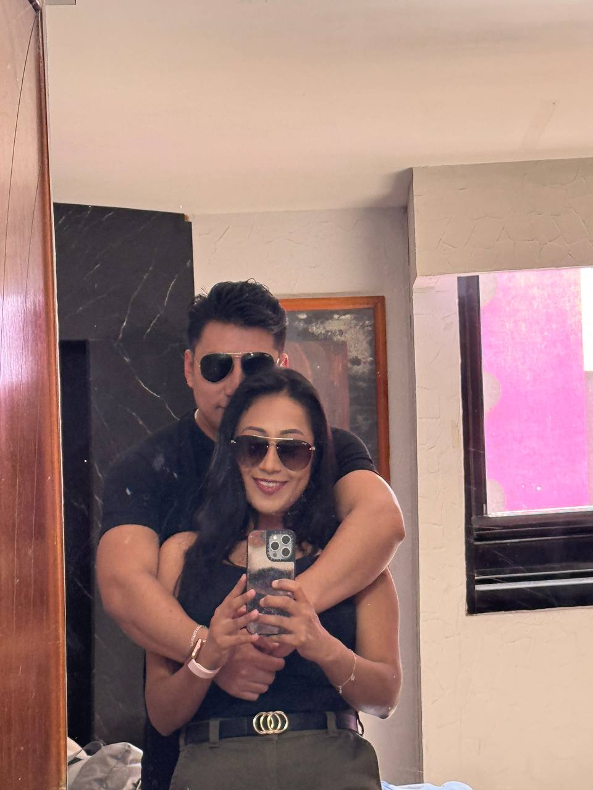
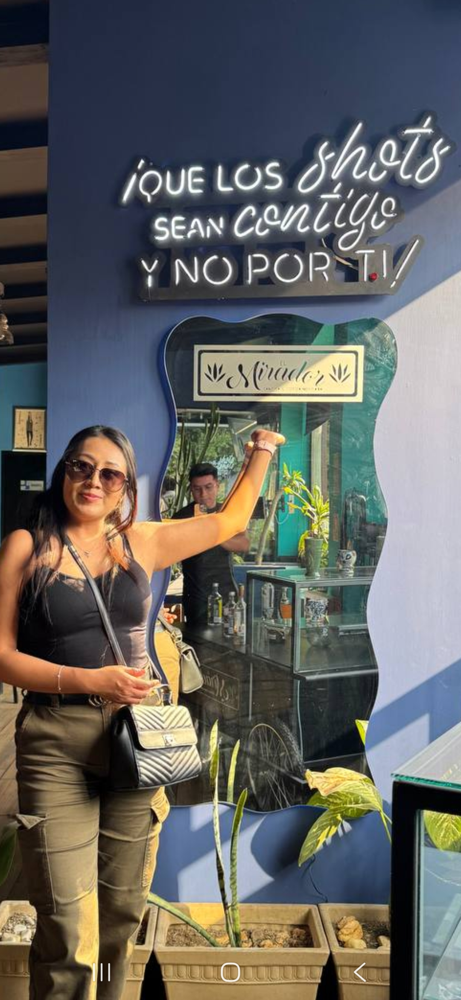

commit 0016 Date: 14–15 Mar 2026 🟡 The Wrong Cream 🟢 Git Message feat: first trip to Puebla completed ⚪ Story A mediados de marzo viajamos a Puebla. Una de mis amigas me había invitado a su baby shower. Te pregunté si querías acompañarme y aceptaste. Muy temprano salimos rumbo a la terminal de ADO. Después de varias horas de camino llegamos a Puebla y nos dirigimos a casa de mi amiga. La tarde se fue entre comida, música, baile y pláticas. Había de todo para comer, así que aprovechamos para quitar el hambre después del viaje. Al terminar comenzó otra pequeña aventura. Buscamos un lugar donde pasar la noche. Al principio pensamos en un motel cercano, pero el conductor del Didi nos dijo que esa zona no era muy segura. Sin conocernos decidió llevarnos a otro lugar donde, según él, podríamos descansar con tranquilidad. Incluso habló con la recepción antes de dejarnos ahí. Fue uno de esos gestos inesperados que terminan haciéndote confiar un poco más en las personas. A la mañana siguiente nos arreglamos y comenzamos a recorrer Puebla. Visitamos el Paseo de los Gigantes. Después caminamos por el centro histórico. Comimos. Nos tomamos algunas fotografías. Y disfrutamos el resto del día sin prisa. Antes de regresar pasamos por una exposición donde varios productores mostraban sus productos. En uno de los puestos había unas muestras de crema para manos. Tú pensaste que eran para probar. Y, sin pensarlo dos veces... te la llevaste a la boca. Solo unos segundos después descubrimos que aquella crema no era para comer. Todavía hoy seguimos riéndonos cada vez que recordamos ese momento. Y desde entonces... para nosotros siempre será "la crema equivocada." 🟣 Developer Notes First trip to Puebla completed. Unexpected kindness received. "The Wrong Cream" officially added to the list of unforgettable memories. 🟢 Impact on Project + First trip to Puebla completed. + Another city explored together. + New inside joke archived. 🟢 Commit Status ✔ Completed ✔ Reviewed ✔ Ready for Release
🖼 Recuerdos

Beso en Puebla.

Baby shower time.

Pero qué guapos.

Mr. Músculo.

Esta me encanta.

Somos gigantes.

Tú... de fondo (fotógrafo personal).
1 / 7
⬅ Regresar al Commit History